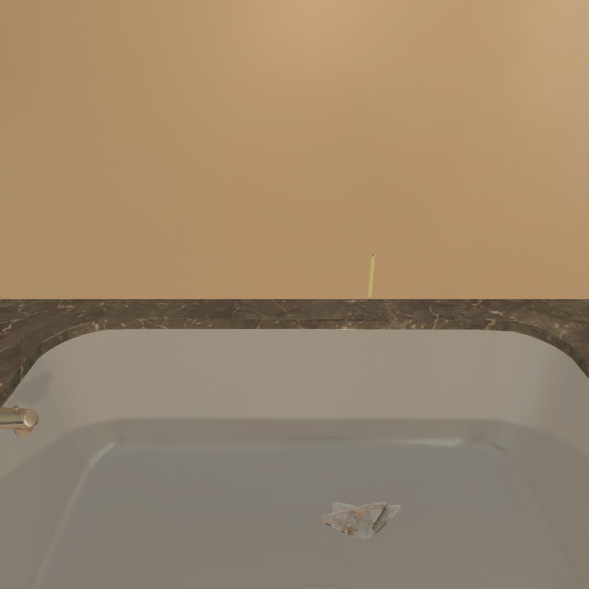

---------------------------------------------------------task: 11---------------------------------------------------------
--------------------------------------------------------------------------------------------------------------------------------------------------------------------
--------------------------------------------------------------------------------------------------------------------------------------------------------------------
Step:--------------------------------------------------------------------------18-------------------------------------------------------------------------------
----------------------------------------
VLM Prompt:
Image1:
**Instruction**
1. Analyze the provided image to identify all visible household objects, focusing on those relevant to the task description "put a clean soapbar in bathtubbasin."
2. Use the analysis of the image and the task hint "The agent must find an object of the desired type, pick it up, go to a sink or a basin, clean the object with a sink or basin, and then find the correct location to place it and put it down there. The agent does not need to use soap bottle or faucet to clean the object, and the agent just needs to do action that is "clean the object with the sink or sink basin"." to answer the question: what is the most reasonable action in the choices for the task description "put a clean soapbar in bathtubbasin"?
4. Decide and write the answer using the template: The answer is: (i): , where i is the real number. If there is no desired object in the image, search every place based on **Initial Observation** to find the object. And if no one is exactly correct, choose a similar answer.
**Initial Observation**
You are in the middle of a room. Looking quickly around you, you can see bathtub (1), bathtubbasin (1), toilet (1), cabinet (1-2), countertop (1), sink (1), sinkbasin (1), garbagecan (1)
**Answer Choices**
(1): go to bathtub 1
(2): go to toilet 1
(3): go to cabinet 1
(4): go to countertop 1
(5): go to sink 1
(6): go to sinkbasin 1
(7): go to cabinet 2
(8): go to garbagecan 1
(9): take cloth 2 from bathtubbasin 1
(10): take faucet 3 from bathtubbasin 1
(11): take candle 3 from bathtubbasin 1
(12): examine bathtubbasin 1
**Answer**
Let's think step by step by following the instructions.
----------------------------------------
----------------------------------------
Original Response:
First, we need to identify all visible household objects relevant to the task description "put a clean soapbar in bathtubbasin." In the image provided, we can see a bathtubbasin and what appears to be a small object inside it, which could be a soapbar.
Next, according to the task hint, the agent must find an object of the desired type (a soapbar), clean it, and then place it in the correct location (the bathtubbasin). The agent does not need to use a soap bottle or faucet to clean the object, just perform an action that is "clean the object with the sink or sink basin."
From the initial observation, we know there are multiple locations to search for a soapbar, such as cabinets, countertops, or a garbage can. However, since there appears to be an object in the bathtub basin that could be a soapbar, the most reasonable action would be to examine the bathtub basin to confirm if the object is indeed a soapbar and if it's clean.
Therefore, the answer is: (12): examine bathtubbasin 1.
----------------------------------------
----------------------------------------
>>> Refine Original VLM Response and Get Pure Action: No action
----------------------------------------
-----------------------------------------------------------------
Running time: 14.871702432632446 seconds
Total Money: 3.4110199999999993
-----------------------------------------------------------------
-----------------------------------------------------------------
Text Observation:Nothing happens.
-----------------------------------------------------------------
UNSUCCEED